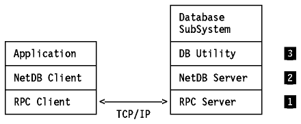

Table of Contents
Table of Contents  Implementations
ImplementationsTable of Contents Implementations
There are a number of other application protocols which are not documented in the RFCs, but are implemented by various products. The following sections describe some of these protocols.
The Network Database (NDB) protocol is not an Internet standard.
NDB defines a protocol for use with relational database systems in a TCP/IP environment. It has the following objectives:
NDB is built on the Remote Procedure Call (any arbitrary implementation of
RPC) using the client/server model. Please see
Figure - Components in the Network Database
(NDB) Protocol for an overview of the various NDB components.

Figure: Components in the Network Database (NDB) Protocol
The TCP/IP for MVS and TCP/IP for VM both implement a NDB server and provide sample NDB client source code for AIX/6000 and SUN workstations. The supported database products are DB2 in MVS and SQL/DS in VM.
The current VM server implementation only supports the SQL SELECT DML function.
The current MVS server implementation supports all SQL statements that can be dynamically prepared in an MVS DB2 environment.
For details on the NDB implementations, please refer to IBM TCP/IP Version 3 Release 1 for MVS: Customization and Administration Guide and IBM TCP/IP Version 2 Release 3 for VM: Planning and Customization.
The Network Information Systems (NIS) is not an Internet standard. It was developed by Sun Microsystems, Inc. It was originally known as the Yellow Pages.
NIS is a distributed database system which allows the sharing of system information in an AIX- or UNIX-based environment. Examples of system information that can be shared include the /etc/passwd, /etc/group and /etc/hosts files. NIS has the following advantages:
NIS is built on the SUN-RPC. It employs the client/server model. An NIS domain is a collection of systems consisting of:
Note that the speed of a network determines the performance and availability of the NIS maps. When using NIS, the number of slave servers should be tuned in order to achieve these goals.
AIX/6000 and AIX/ESA Version 2 all support NIS.
Note that the AIX/ESA implementation is provided by the licensed program Network File System For AIX/ESA Version 2. In all implementations, NFS must be configured before using NIS.
Customer Information Control System (CICS) is a high-performance transaction-processing system. It is developed by IBM and has product implementations in MVS/ESA, MVS, VSE, OS/400, OS/2, AIX/6000.
CICS is the most widely used OLTP (Online Transaction Processing) system in the marketplace today. It provides a rich set of CICS command level APIs to the application transaction programs for data communications (using SNA) and database (using VSAM, IMS or DB2).
Given the need for interoperability among heterogeneous network protocols, there is a requirement to enhance the CICS data communications interface to include support for TCP/IP in addition to SNA. The IBM Sockets Interface for CICS is a first step towards addressing this requirement.
TCP/IP for MVS implements the IBM Socket Interface for CICS. Both CICS/MVS Version 2 and CICS/ESA Version 3 are supported.
The support provides a sockets environment to any C, COBOL, PL/I or Assembler language programs running under CICS, for communications with any sockets application programs running in any (local or foreign) systems. The interface is implemented, in CICS terms, using a CICS Task Related User Exit (TRUE). (This is similar to the TRUE implementation of the CICS-DB2 SQL interface.)
For details on the IBM Socket Interface for CICS, please refer to IBM Sockets Interface for CICS-Using TCP/IP Version 3 Release 1 for MVS: User's Guide.
The IMS Socket Interface is implemented in TCP/IP for MVS Version 3.1 only.
The IMS to TCP/IP sockets interface allows you to develop IMS message processing programs which can conduct a conversation with peer programs in other TCP/IP hosts. The applications may be either client or server applications. The IMS to TCP/IP sockets interface includes socket interfaces for IBM C/370, assembler language, COBOL, and PL/I languages to use stream (connection oriented) sockets. It also provides ASCII-EBCDIC conversion routines, an ASSIST module which permits the use of conventional IMS calls for TCP/IP communications, and a Listener function to listen for and accept connection requests and start the appropriate IMS transaction to service those requests.
For details on the IBM Socket Interface for IMS, please refer to IBM Sockets Interface for CICS-Using TCP/IP Version 3 Release 1 for MVS: User's Guide.
The Sockets Extended information described here is related to the implementation in MVS only.
Sockets Extended provides programmers writing in assembler language, COBOL, or PL/I with an application program interface that may be used to conduct peer-to-peer conversations with other hosts in the TCP/IP networks. You can develop applications for TSO, batch, CICS, or IMS using this API. The applications may be designed to be reentrant and multithreaded depending upon the application requirements. Typically server applications will be multithreaded while client applications may not be.
For details on the IBM Sockets Extended for MVS TCP/IP, please refer to IBM Sockets Interface for CICS-Using TCP/IP Version 3 Release 1 for MVS: User's Guide.
REXX sockets allow you to develop REXX applications that communicate over a TCP/IP network. Calls are provided to initialize sockets, exchange data via sockets, perform management activities, and close the sockets.
The REXX Socket APIs are implemented in TCP/IP for MVS and OS/2.
Programs that were originally written to the X/Open Transport Interface (XTI) may be used with the TCP/IP stack. RFC 1006 defines a protocol mapping component to enable these programs to be used in a TCP/IP network.
The RFC 1006 is implemented in the following IBM products:
 Summaries
Summaries